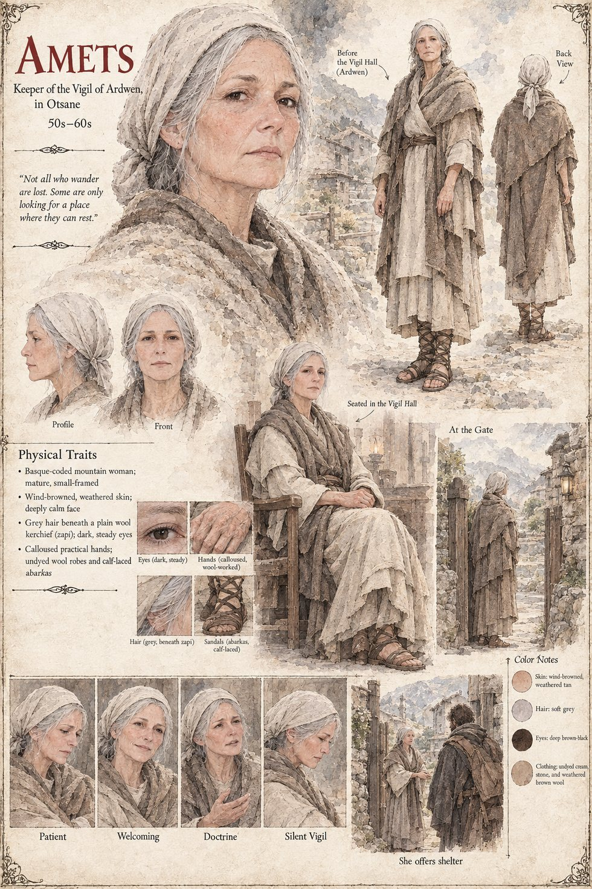

Amets
Keeper of the Vigil of Ardwen, in Otsane · 50s–60s on the sheet
The Keeper of the Vigil of Ardwen in Otsane, a small theocracy tucked into a fold of the western range so thoroughly unremarkable that Sarkveti's maps render it as an unlabeled patch of grey. She sits in a plain wooden chair in a Vigil house with no cathedral and no gold, because Ardwen's doctrine asks for empty hands before anything else, and she receives the stranger Otar's men deliver to her gate with a silence that is unhurried in a way nothing in Tavgora's court ever managed. Before the week is out she gives him a name for the register that is not his own, Mikel, and a standing instruction to her household, kept without a single question, that no man called Levan has ever come to that gate. A gate-warden who dislikes lying so much that she practices it exactly once in her life tells the one rider who does reach Otsane that no man of that name ever came there. The sheet draws her as a small-framed, wind-browned Basque-coded mountain woman, grey hair beneath a plain wool kerchief, in undyed wool and calf-laced abarkas.
“Ardwen does not ask what your hands have done. Only that you keep them open now.”
Appears In

Related Subjects


Related Records

Keeper Amets receives the stranger Otar's men have delivered to her gate in Otsane, and tells Levan, before he has said a word about any of it, that Ardwen does not ask what his hands have done, only that he keep them open now.